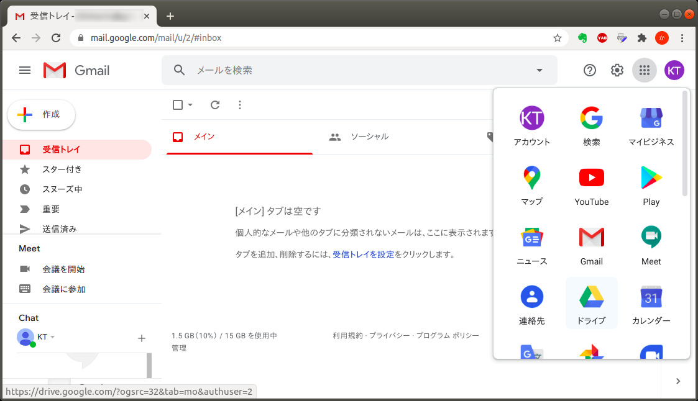
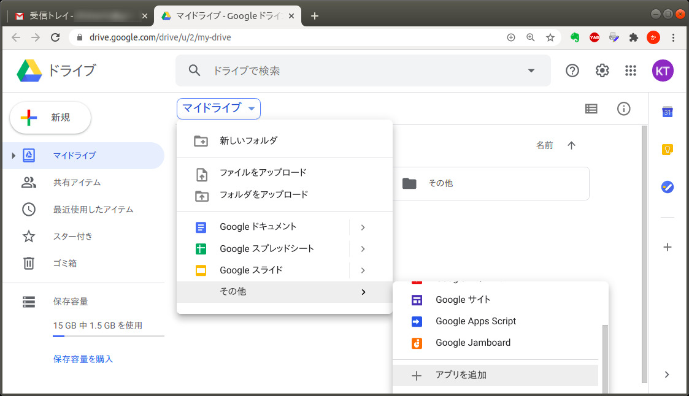
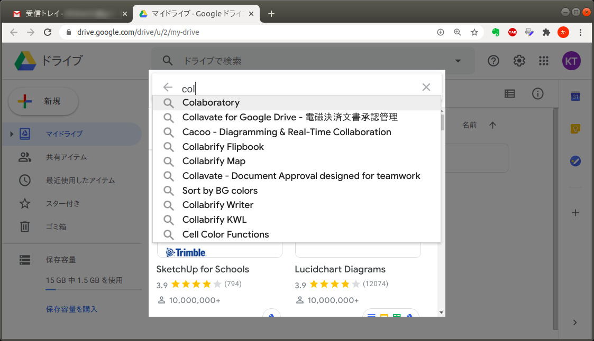
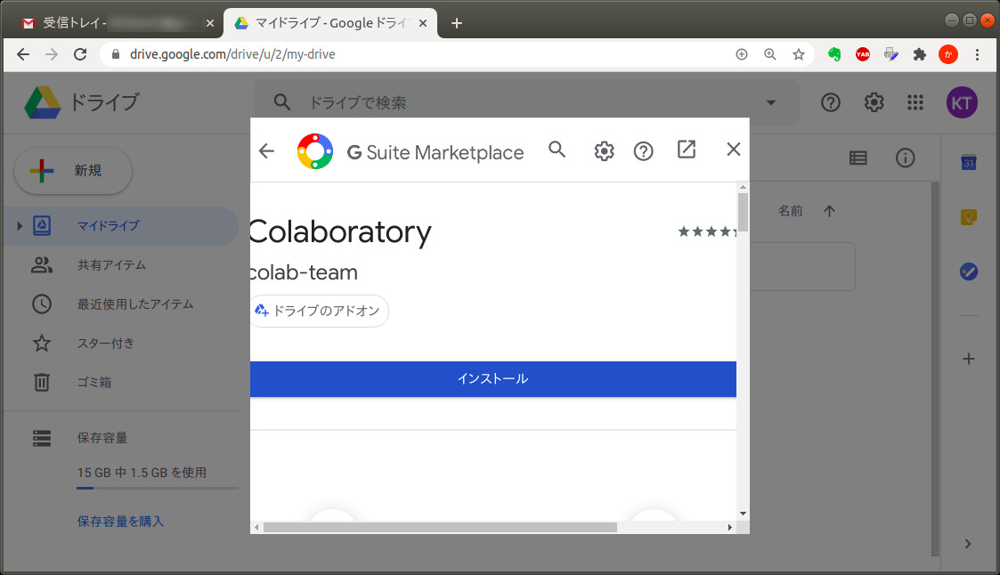
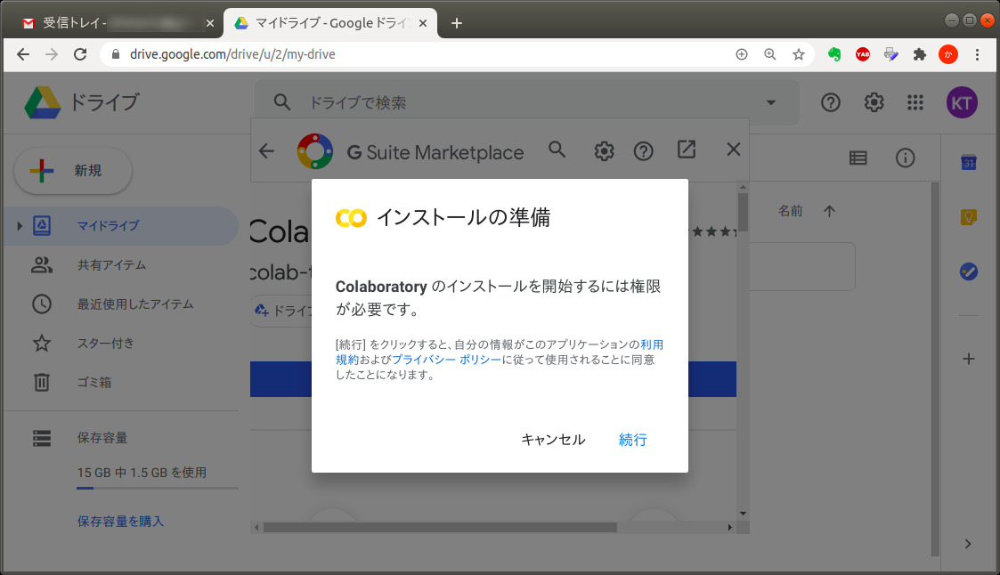
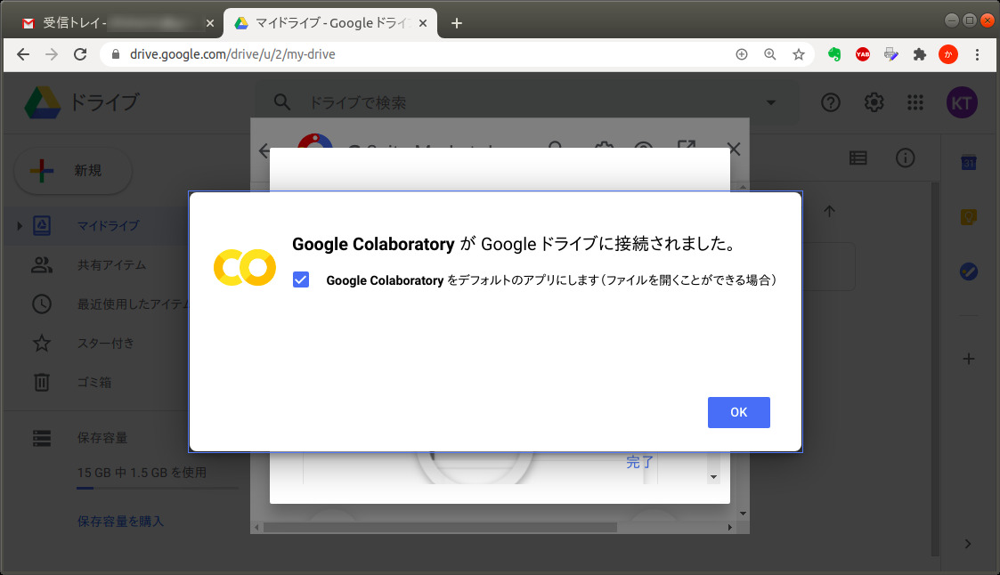
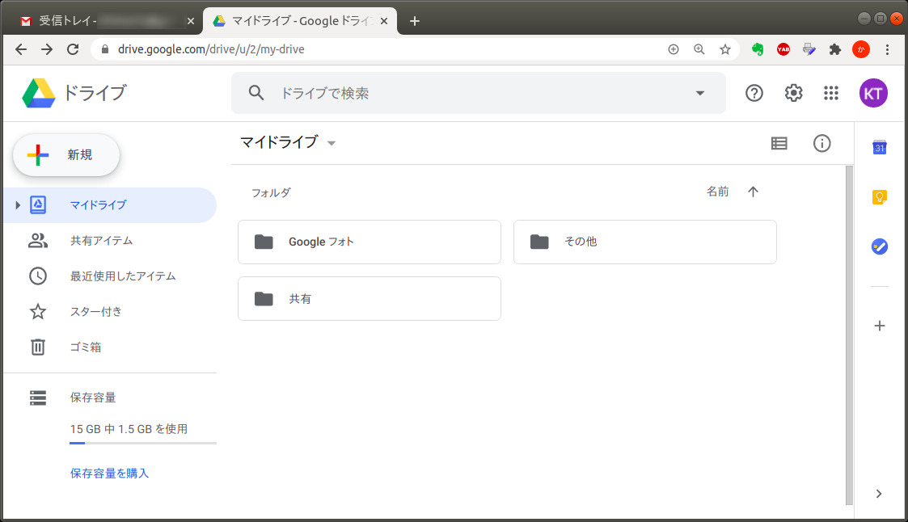
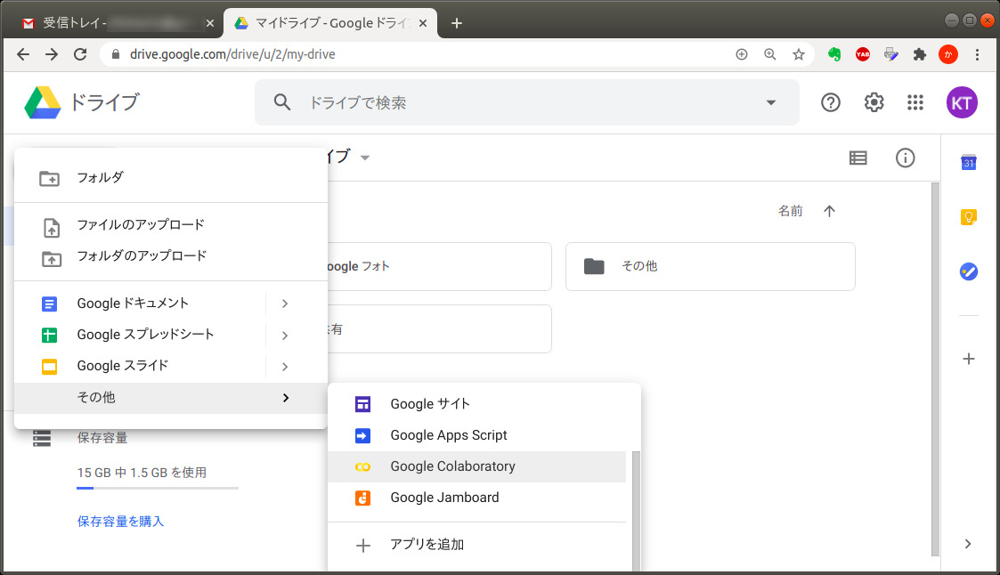
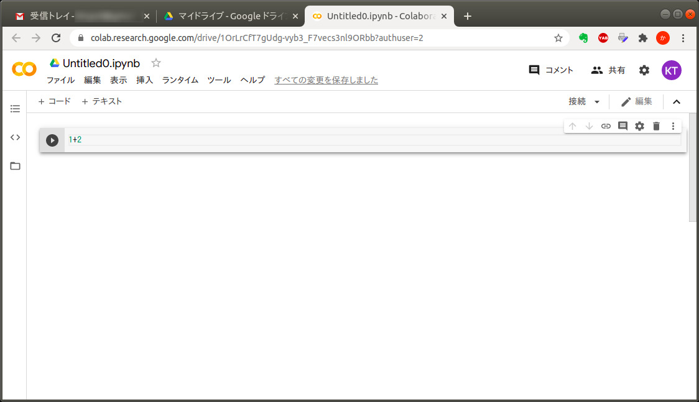
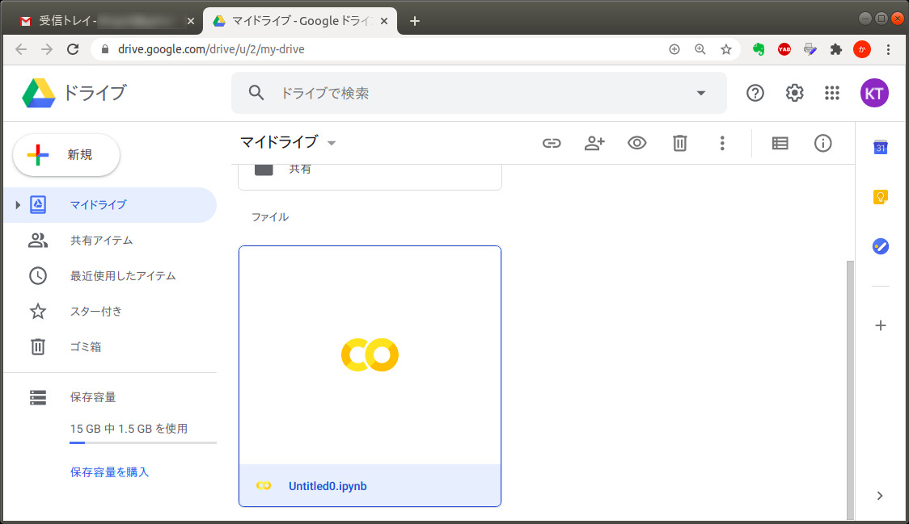

Google アカウントの取得
- Colab (Google Colaboratory) は，Google のサービスなので，利用するには Google (Gmail) のアカウントが必要です．
- 持ってない人は取得してください．（Androidスマホユーザーは持ってるはず）
※ 以下の説明では，PC 版 Chrome ブラウザを使用しています．スマホ版や他のブラウザを使うと，表示内容が微妙に異なるかもしれません．
Colab のインストール
Colab の全機能を利用するには，自分の Google アカウントで インストール操作が必要です．
- まず，自分のアカウントで「ドライブ」を起動します．

- 「マイドライブ」をクリックして，「その他」「＋アプリを追加」を選びます．
- サブフォルダを作って，そこで同様の操作をすると，そのフォルダだけに Colab をインストールすることができます（他のフォルダに影響を与えない）．

- 検索ボタンをクリックして，
- colaboratory とタイプしていくと，途中で「Colaboratory」がヒットするので，選びます．

- 「インストールボタン」をクリックします．

- 認証を求められるので「続行」をクリックします．

- しばらくするとインストールが完了するので，「OK」をクリックします．

インストールは以上です．
Colab の動作確認
- ドライブに戻って「新規」をクリックします．

- 「その他」に「Google Colaboratory」が追加されているので，クリックします．

- 【入力】 先頭のセルに，試しに「1+2」を入力します．

- 【実行】 セル内で，Ctrlキーを押しながらEnterキーを叩くと，実行されます．
- Ctrl-Enter の代わりに，該当セルの再生ボタンを押しても実行できます．
- ブラウザによっては，Shift-Enter でも実行できるかも．
-
実行結果の「3」はクラウド上の Python が計算しています．その結果を Colab がブラウザ上に表示しています．
-
ドライブに戻ると，さきほど新規作成した「Untitled0.ipynb」ができています．

- 【Colabファイルの実行】 該当ファイルをダブルクリックすると，再び Colab が起動します．さきほどの実行結果がちゃんと保存されていますね．
- 【再実行】 これを改めて【実行】すれば，改めて計算がなされます．（この例では，入力が同じなので変わり映えしませんが）
- それ以外の Colabファイルも，同様に，ドライブから開けば実行できます．
動作確認は以上です．